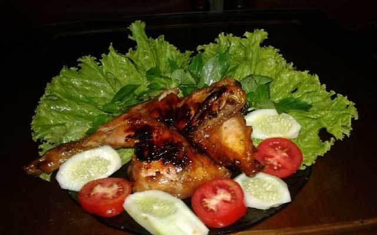

Bahan :
- 1 ekor ayam, potong sesuai selera
- 2 batang serai, ambil bagian putihnya, memarkan
- 20 gr asam jawa, larutkan dan remas-remas dalam 3sdm air panas, ambil airnya
- 500 ml air kelapa
Bumbu Halus :
- 50 gr gula merah(gula jawa), sisir halus
- 10 butir bawang merah
- 5 siung bawang putih
- 5 butir kemiri
- 1 sdm ketumbar
- 1 ruas Kunyit
- 1 ruas lengkuas, keprek
- 1/2 sdt merica bubuk
- 1 sdm kecap manis
Cara Membuat :
Langkah 1 : Siapkan semua bahan
Langkah 2 : Haluskan bahan bumbu yang sudah disiapkan tadi
Panaskan minyak cukup banyak, kemudian goreng ayam hingga matang, tiriskan dan sisihkan.
Langkah 3 : Panaskan wajan, masukkan bumbu halus tumis hingga wangi. Kemudian masukkan daun salam dan sereh aduk lagi hingga tercium aroma wangi.
Langkah 4 : Tambahkan air asem jawa, aduk merata hingga tercampur ke bumbu. Kemudian masukkan potongan ayam, aduk merata dengan bumbu. Masukkan air kelapa aduk merata dan masak hingga bumbu meresap dan air mengering
Cara penyajiannya: Siapkan Happy Call Jumbo 32cm olesi kedua sisi pan dengan sedikit mentega. Setelah panas masukkan potongan ayam bumbu tadi masak hingga matang dan jangan lupa di bolak-balik sambil diolesi kecap/sisa bumbu agar ayam panggang lebih lezat.
Setelah ayam matang kecokelatan, angkat dan siap untuk di hidangkan bersama lalap dan sambal